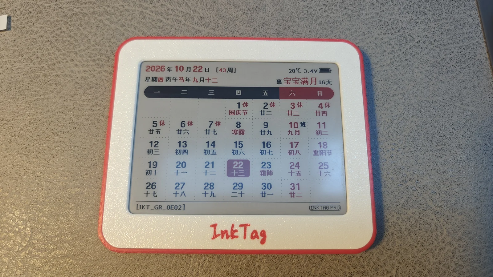
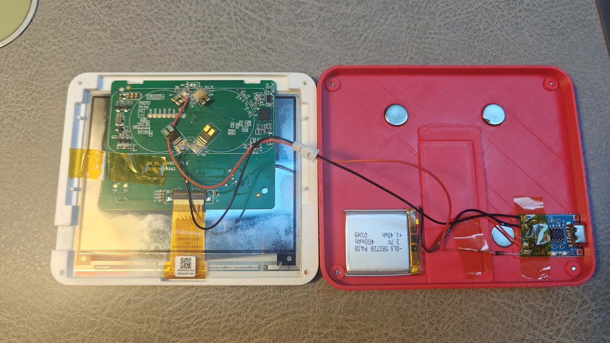
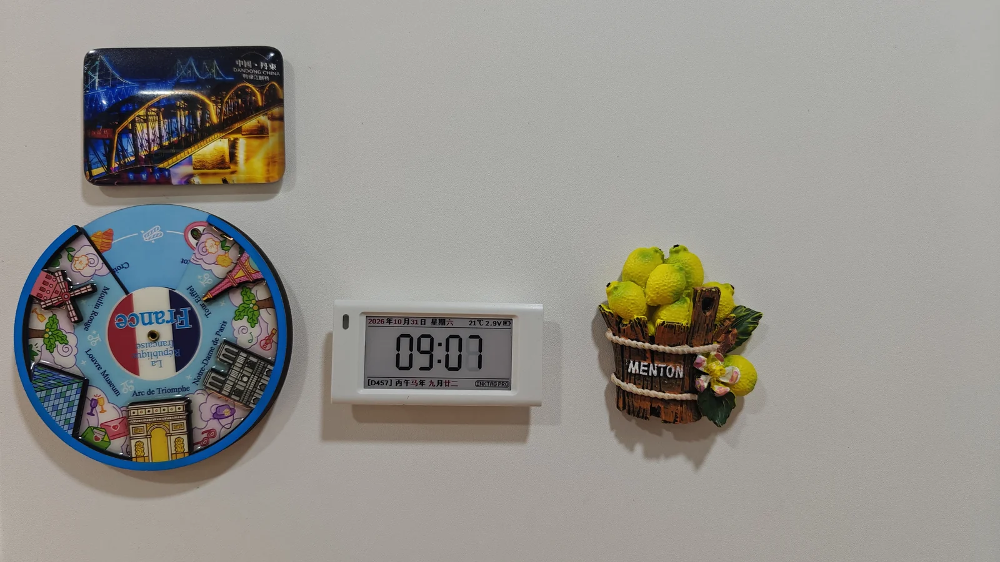
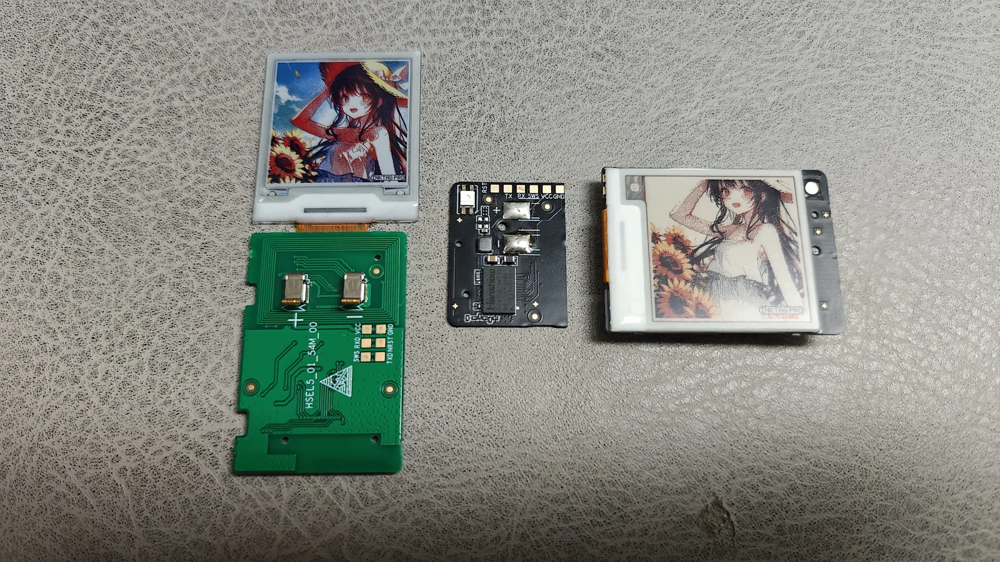
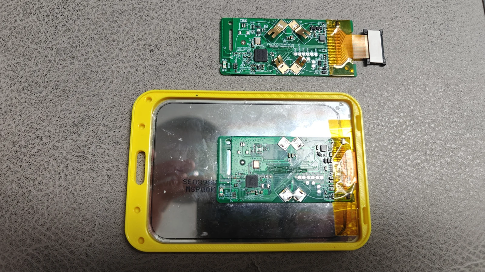

InkTag 玩法
把闲置价签做成桌面日历、小钟、随身防丢标签或电子相片。下面都是实物改装，可以按手头的主板和屏幕选择。
| 玩法 | 主要材料 | 功能要求 |
|---|---|---|
| 4.2 寸日历或相册 | 4.2 寸价签、3D 打印外壳 | Free 可用内置日历、照片和图槽轮播 |
| 磁吸小钟 | ZKC21V、支持局刷的屏幕 | 普通时钟可用 Free；时钟局刷需 Pro 和相应屏幕支持 |
| PhotoTag 风格防丢标签 | Nebular／Stellar 154Q，或早期可换屏 Stellar 154R + E6 | Find 和 E6 控制需要 Pro，属于实验功能 |
| 拍立得风格电子相片 | 华为 3.98 寸四色屏 + ZKC21V／ZKC21B 主板 | Free 可发送静态照片 |
玩法 1：4.2 寸桌面日历或相册
给 4.2 寸价签换一个外壳，摆在桌上或吸在金属表面。内置日历自动换日；想做相册时，将照片保存到图槽，再开启轮播，也可只保留一张喜欢的照片。


准备材料
- 兼容 InkTag 的 4.2 寸价签，常见屏幕为 400×300。
- 适合主板与屏幕的外壳；需要磁吸时准备磁铁。
- 若改成充电款，另备匹配的电池、充电与供电电路。
可以使用 4.2 寸超薄外壳 3D 模型（MakerWorld）。模型提供 9mm 带支架和 7mm 无支架两种版本，并预留 TP4056 充电板空间。下载前核对主板、电池厚度和排线位置；模型原页另有正面参考和背面参考。
开始使用
- 按已适配设备确认主控和主板，安装匹配固件。
- 打开 WebUI，连接设备，选好实际屏幕与方向。
- 校时后选择内置“日历”，按需加入倒计时名称和日期。做相册时，到“图片”发送照片并保存到图槽，再设置轮播间隔。
- 等待刷新结束，断开蓝牙，装好外壳。内置日历和设备图槽轮播不需要电脑一直在线。
原装一次性纽扣电池不能充电。 充电改装应核对主板允许的供电电压；外壳预留充电板位置，不代表充电板、电池可以直接接入所有主板。
玩法 2：ZKC21V 磁吸小钟
把 ZKC21V 做成一只小钟，放在冰箱、书桌或床头，抬眼就能看到时间。

在 WebUI 中校时并选择内置“时钟”。图示设备使用局部刷新：需要激活 Pro，并选择实际支持局刷的屏幕配置；同名 ZKC21V 的不同主板、屏幕不一定具备相同能力。Free 也可使用普通时钟。
局刷时钟每天仍会全屏刷新并改变背景，刷新频繁也会增加耗电。支持情况见已实测屏幕。
玩法 3：PhotoTag 风格的随身防丢标签
把照片、名字或联系方式留在小屏幕上，再开启实验性的苹果 Find My 网络广播，做成兼顾展示和防丢的小标签。

选择设备
- Nebular-154Q-N 或 Stellar-154Q-N：使用四色屏，做成黑白红黄的照片防丢标签。部分铭牌带 Pro 字样，仍需核对具体主板配置。
- 早期 Stellar-154R-N 可换屏版：换上 E6 1.54 寸六色墨水屏，得到六色 PhotoTag。后期固定屏版不能按这个方法换屏；可换屏主板以
HSEL5_01_54M_00等已适配配置为准。 - Nebular-213R-N：主板很小，可以拆掉屏幕，接上匹配电池，装入包、外壳或其他随身物品中，单独当防丢器，不必保留显示屏。
E6 屏幕控制需要 Pro。接普通价签主板时，按屏幕说明处理排线第 16 脚，使其绝缘悬空，否则可能发热并显著耗电。先断电再处理，不要把这一接法套用到不同排线。
开始使用
- 按已适配设备和已实测屏幕选固件、配置和屏幕。换屏前核对排线与引脚。
- 在 WebUI 导入照片，预览并调整抖动，也可用画板加入名字、电话或二维码，再发送到设备。
- 在支持该功能的主板上激活 Pro，进入 Find 页面开启广播。
- 按 Find 查询与标签迁移保存设备信息并导入本地客户端，开启记录。在线版或 standalone 本身不提供查询后端。
防丢依靠附近参与苹果 Find My 网络的设备转递位置，不是 GPS 实时定位，不保证持续更新。这是实验功能，不代表 Apple 官方认证或与 PhotoTag 的完整兼容，适合辅助寻找随身物品。
玩法 4：拍立得风格电子相片
使用 华为 3.98 寸 768×552 四色屏 + ZKC21V 或 ZKC21B 主板，拆掉原屏并焊接、转接到新屏，做一张能反复换照片的电子相片。

准备与装配
- 华为 3.98 寸黑白红黄四色屏、匹配的排线／转接，以及合适供电和相框。
- ZKC21V 或 ZKC21B 主板；ZKC21V 有不同主控，先核对实际主控和丝印。
- 图示 ZKC21V 为适应空间锯短了主板。锯板前断电，核对天线、关键走线和焊盘位置，清理切屑；不同版型不能照照片尺寸直接裁切。
开始使用
- 在 WebUI 选择实际华为 A0／A1 屏幕配置和方向，勿把两种屏幕方案混用。
- 导入照片并裁剪；也可新建静态画板，留出白边，加入拍摄日期和一句话。
- 使用四色设备效果预览调整照片。其他颜色和渐变通过抖动表现。
- 先选择“仅显示一次”发送，确认方向、画面和边缘完整，再保存到图槽或设置轮播。
- 等待刷新完成、断开蓝牙，把相片装框。屏幕没有背光，在有环境光的位置观看。
本文实物照片由项目作者提供；模型参考图来自原模型页，作者为 didi（@solar2ain）。屏幕内示例内容的权利归各自作者所有。